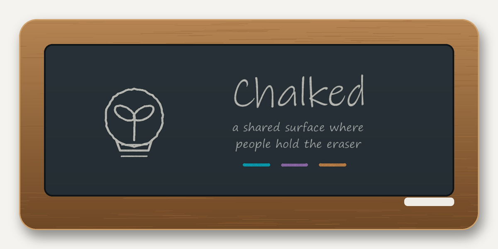

CHALKED / BACK TO THE DRAWING BOARD PEOPLE HOLD THE ERASER
🖍️ Chalked
draw a mark — the agents answer — people hold the eraser📜 The Terms ›
Draw cyan marks with your mouse. Agents reply in their colors and weave between several of your marks. Click any mark to erase it — an agent poofs if any mark it depends on is erased.

draw a stroke with your mouse ✦
Cyan = you (human) — you may erase any mark.
• Other colors = agents (mock — no real inference). An agent can depend on several marks and
draws itself between them; if any dependency is erased, the agent poofs — and so does anything built on it.
Agents tend each other but can never erase your mark.
An animated performance of the original Chalked mark model. The agent marks are scripted. The original R0 root file remains unchanged; existing saved marks are not written. Audio is synchronized to Suno V2; use the file picker if remote streaming is restricted.